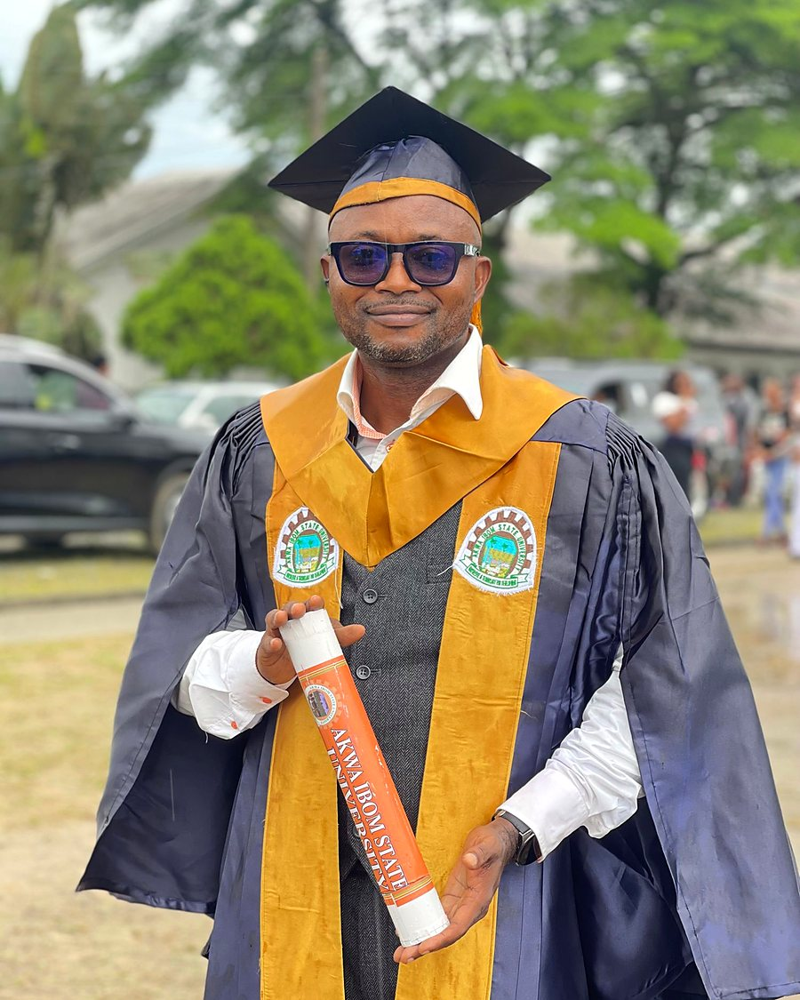

Choisir sa filière
Consultez les programmes, les durées et les conditions d’accès. Un conseiller peut vous aider à comparer.
Voir les formations →Une formation en 1 an, ouverte aux titulaires du CEP, BEPC, Baccalauréat, BTS, Licence et plus ou du GCE Ordinary Level et Higher Level, pour préparer un DQP ou un CQP. L’admission se fait après étude du dossier et entretien de motivation.

Consultez les filières, préparez votre dossier et échangez avec notre équipe pour choisir un parcours adapté.
Consultez les programmes, les durées et les conditions d’accès. Un conseiller peut vous aider à comparer.
Voir les formations →Remplissez le formulaire en ligne ci-dessous ou déposez un dossier papier à l’accueil du centre.
Accéder au formulaire →Échange de motivation et, selon la filière, test de niveau, de logique ou de créativité.
Réponse sous 48 heures ouvrées, puis remise du calendrier et des modalités de paiement.
La formation est accessible aux titulaires d’un diplôme francophone ou anglophone. L’orientation vers le DQP ou le CQP est confirmée lors de l’entretien selon les prérequis.
DQP — Diplôme de Qualification Professionnelle.
CQP — Certificat de Qualification Professionnelle.
Durée : un an de formation. Le stage académique est trouvé par le centre, encadré et validé en fin de parcours.
Filières santé : entretien renforcé et vérification des aptitudes au contact des patients.
Un dossier complet accélère l’étude de votre candidature.
Montants en francs CFA (FRS). Contactez le centre pour connaître les modalités de paiement échelonné.
Une autre question ? Écrivez-nous, nous répondons simplement.
La formation est ouverte aux titulaires des diplômes francophones (CEP, BEPC, Baccalauréat, BTS, Licence et plus) ainsi qu’aux titulaires du GCE, GCE Ordinary Level ou Higher Level. L’orientation vers le DQP ou le CQP est confirmée lors de l’entretien selon vos prérequis.
La formation dure un an et prépare à un DQP ou à un CQP selon la filière et votre parcours.
Après réception du dossier, un entretien de motivation est organisé. Selon la filière, un test de niveau, de logique ou de créativité peut être proposé. Une réponse est communiquée sous 48 heures ouvrées.
Le stage académique est trouvé par le centre, encadré et validé en fin de parcours.
Les frais d’inscription s’élèvent à 10 000 FRS et les frais de formation pour un an à 250 000 FRS. Contactez le centre pour les modalités de paiement échelonné.
Caugéfar Village, entrée Mini-Cité